ch8: 랭킨 사이클
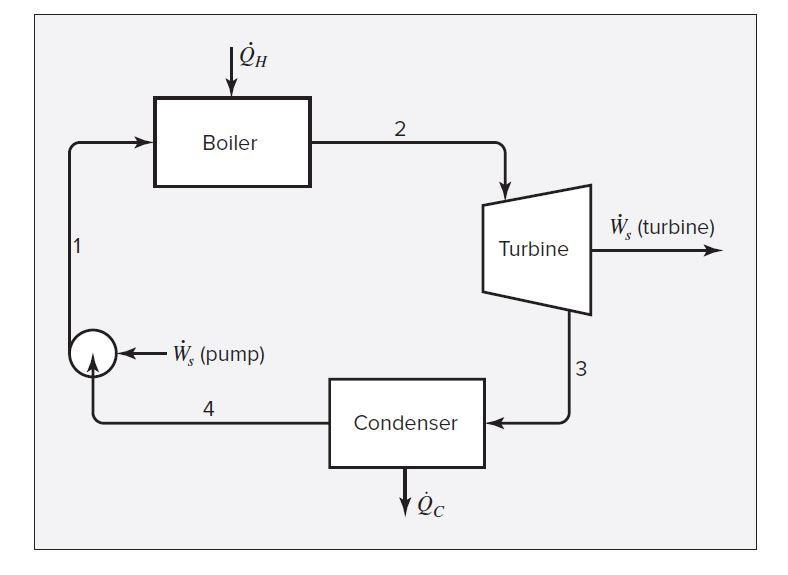 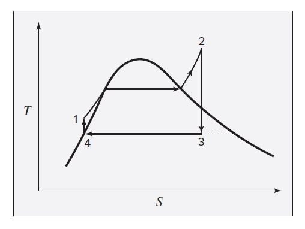
스팀터빈은 위와 같이 생겼다. 이를 랭킨 사이클이라고 하며, T-S선도로 그 거동을 나타낼 수 있다.
①→② : 압력이 일정하게 유지되는 보일러에서, 과냉각 액체를 과열 수증기로 가열 하는 과정이다. 일정 압력 곡선상 세 부분으로 나뉘어져 있는데, 각각 과냉각 액체를 끓는점까지 가열, 끓는점에서 기화, 포화 수증기를 과열시키는 과정이다. 기화 과정은 온도도 일정하게 유지됨을 알 수 있다.
②→③ : 과열 수증기가 터빈에서 응축기의 압력까지 가역 단열 팽창된다. 터빈 출구에서 포화 액체와 수증기 두 개의 상으로 존재하지만, 보일러에서 과열시킨 상태에서 터빈으로 들어가므로, 출구의 액체 함량은 카르노 싸이클에 비해 매우 적은 상태다.
③→④ : 남은 포화 수증기가 일정한 압력과 온도로 유지되는 응축기에서 포화 액체로 완전 응축 된다. 출구에서 포화 액체 한 개의 상으로 존재한다.
④→① : 포화 액체가 펌프에서 보일러의 압력 까지 가역 단열 압축되어 과냉각 액체가 된다. 그래프 상에 나타난 온도 상승은 이해를 돕기위해 과장된 것이고 펌프를 통과하면서 발생한 온도 변화는 실제로 매우 작다.
예제를 풀어보며 내용을 이해해보자.
8.1) 수증기 동력장치의 기본적인 사이클이 그림8.1에 나와있다. 터빈은 6800kpa와 550도의 유입 수증기에 의하여 단열적으로 운전되고 방출 수증기는 질이 0.96으로서 50도에에서 응축기로 들어간다. 포화액체 물은 응축기로부터 보일러로 이송된다. 펌프의 일, 운동에너지, 위치에너지를 무시하고 사이클의 열효율과 터빈의 효율을 계산하여라.
한문장씩 살펴보자.
1.터빈은 6800kpa와 550도의 유입 수증기에 의하여 단열적으로 운전되고
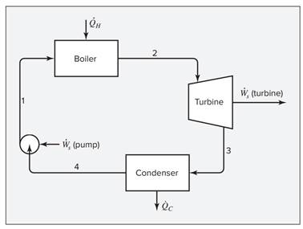
그림은 위와 같은데, 여기서 먼저 터빈을 볼 것이다.
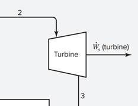
7장에서 푼 것처럼 터빈에서 나오는 Ws를 구해보자.
유입조건: P2=6800KPA, T2=550도, 단열운전
여기서 과열수증기표를 통해 유입 H2, S2을 구해보자.
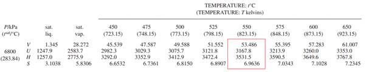
H2=3531.5, S2=6.9636이다.
2) 방출 수증기는 질이 0.96으로서 50도에서 응축기로 들어간다.
터빈에서 방출된게 96%의 수증기와 4%의 물이 섞인 50도 포화수증기이다. 이를 포화수증기 표에서 찾아보자.
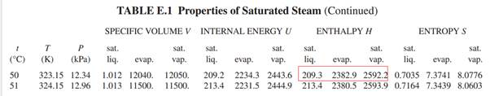
따라서 방출 엔트로피 H3=209.2*0.04 + 2592.2*0.96=2496.9이다. 또한 방출 엔트로피 S3도 구할 수 있다.
S3=0.04*0.7035+0.96*8.0776=7.7826
그런데 여기서 한가지 문제점이 있다. 터빈이 이상적이면 등엔트로피 공정이므로 S2=S3여야 하는데 엔트로피가 증가했다. 이는 터빈이 이상적이지 않기 때문으로, 효율이 존재하기 때문이다. 따라서 여기서 터빈의 효율을 구해보자.
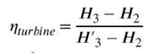
터빈 효율은 이렇게 구한다. H3,H2는 구했으므로 이상적인 조건, 즉 등엔트로피일 때 H’3만 구하면 된다.
따라서 등엔트로피 공정을 가정하고, 50도에서 S’3=S2일 때 H’3를 구해보자.
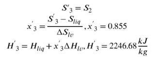
등엔트로피 공정이려면 포화증기가 85.5% 수증기, 나머지 물로 이루어져야 함을 알 수 있다. 이걸로 (실제 x) 이상적인 상황일때의 H’3을 구해보면 2246.68이 나왔다. 이상적인 상황에서는 유출 엔탈피가 실제값보다 더 낮아지면서, 유입엔탈피-유출엔탈피=일 에서 일을 더 뽑아낼 수 있다.
따라서 효율은 다음식에 대입하면
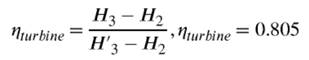
3) 포화액체 물은 응축기로부터 보일러로 이송된다. 펌프의 일, 운동에너지, 위치에너지를 무시하고 사이클의 열효율과 터빈의 효율을 계산하여라.
터빈 효율은 위에서 계산해버렸다.
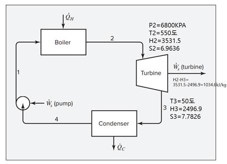
지금 현재 여기까지 온 상태이다. 이제 흐름 3이 콘덴서를 통과하는데, 응축기 통과하면 100%물이 된다.
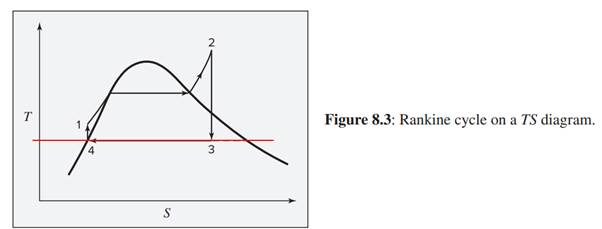
이때 이건 그냥 암기사항인데, 응축과정에서 온도는 변하지 않는다. 당연하게도 물과 수증기->물로 바꾸는 과정이라 상변화 온도에서 진행되기 때문이다. 따라서 등온과정이므로 배출되는 흐름은 50도이다.
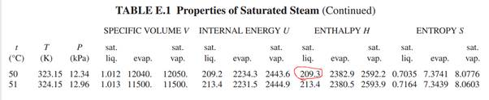
50도 포화수증기의 엔탈피는 209.3이다. 따라서 다음과 같이 적을 수 있다.
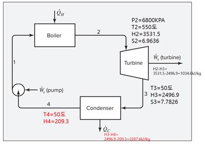
이제 문제조건에서 펌프의 일,운동에너지,위치에너지를 무시하라고 했다. 펌프가 열을 받는 건 아니므로 그럼 에너지 수지식에서 펌프의 영향은 그냥 없다고 보면 된다. 따라서 펌프 무시하고 흐름4=흐름1이라고 볼 수 있다.
따라서 최종 선도는 다음과 같다.
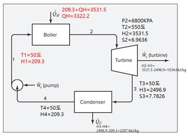
이제 사이클 전체 효율 계산해보면 QH=3322.2, WS=1034.6이므로 계산시
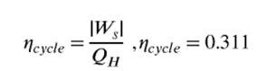
*사이클 효율은 사이클에 투입한 열 대비 나온 일이다.
8.2:H2O를 유체로 하는 카르노 기관이 그림8.2에 보인 사이클로 운전되고 있다. 물 순환 유량은 1kg/s이다. TH=475K, TC=300K일 때 다음을 구하라.
(a) 상태1 2 3 4에서의 압력
(b) 상태 3 4에서의 질(수증기 분율)
(c) 가한 열량
(d) 열 배출량
(e) 4단계 각각에 대한 동력
(f) 사이클의 열효율
일단 이 문제를 풀려면 카르노 사이클을 알아야 한다.
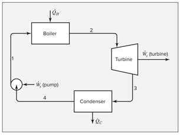
카르노 사이클이나 랭킨 사이클이나 같다. 카르노에서 가정만 약간 달라진 게 랭킨 사이클이고 조금 더 현실적인 기준을 제시해준다는 차이가 있다. 카르노&랭킨 사이클은 위처럼 보일러, 터빈,콘덴서, 펌프로 이루어져 있다.
일단 시작점을 1로 잡자. 1은 물인데, 이것이 보일러에서 열 QH를 받아 수증기 100%인 포화수증기가 된 다음(랭킨과의 차이점1: 랭킨은 여기서 열을 더 가해 과열수증기로 만든다. 알필요 없긴함), 터빈에서 등엔트로피 공정으로 일을 해준다. 이후 응축기에서 약간의 응축(랭킨 사이클과의 차이점2: 랭킨은 100% 응축을 한다.)을 거친 후 펌프에서 일을 받아 온도가 상승함과 동시에 100% 물로 응축하게 된다. 이것이 반복된다.
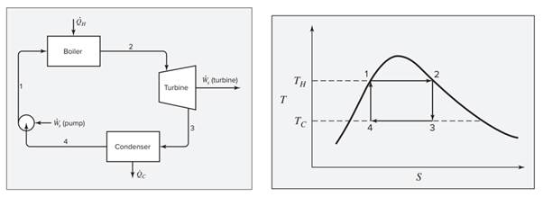
이 그림을 알고 있으면 된다. 이제 문제를 풀어보자.
(a) 상태1 2 3 4에서의 압력
일단 오른쪽 그림의 선도를 보자. 상태 1, 2에서는 온도가 TH=475K임을 알 수 있다. 또 3 4에서는 온도가 TC=300K이다. 그리고 상태 1 2에서는 포화수증기에서 각각 물 100%(상태1), 수증기 100%(상태2)인 상태이다.
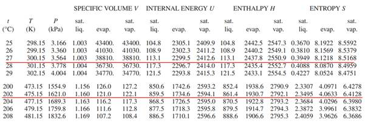
수증기표에서 각각 상태1, 2에서의 엔탈피, 엔트로피, 압력을 구할 수 있다.
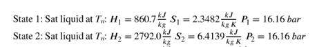
솔루션이랑 약간 다른 이유는, 나는 475.15K을 구했는데 답지는 475K를 구했다. 걍 이정도 차이는 넘어가도록 하자. 둘 중 뭐를 써도 답에 영향은 없다.
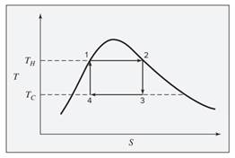
이제 상태 3, 4를 구할 건데, 여기서 힌트는 3은 2와 엔트로피가 같고, 4는 1과 엔트로피가 같다는 것이다. 등엔트로피 공정이기 때문이다. 3 4는 액체 물과 수증기가 섞인 상태인데, 등엔트로피 과정을 가정하여 조성을 구할 것이다.
S2 = S3= Sliq * x liq+Svap* xvap 이때 Xliq+Xvap=1이므로 S2=Xvap(Svap-Sliq)+Sliq 로 3 상태의 증기 조성을 구해보면 0.741이 나온다.
이때 Sliq와 Svap는 T=300K일때의 값이다. 마찬가지로 포화수증기표에서 읽을 수 있다.
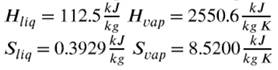
T=300K에서 값
따라서 조성을 구했다면 압력또한 포화수증기표에서 구할 수 있다. 기체 압력*기체조성+액체 압력*액체 조성 이렇게 구하면 된다.
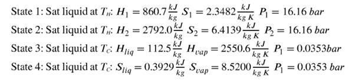
a완료
(b) 상태 3 4에서의 질(수증기 분율)
a풀려면 b 먼저 구해야 해서 이미 풀어버렸다.
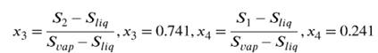
X3=0.741, X4=0.241이다.
(c) 가한 열량
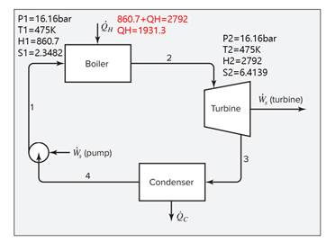
일단 상태 1, 2의 엔탈피를 구했으므로, 쉽게 그 둘의 차로 구할 수 있다. 따라서 1931.3이다.
(d) 열 배출량
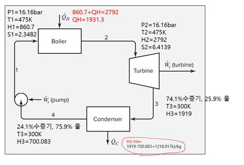
조성을 구했으므로, 쉽게 3 4에서 엔탈피도 구할 수 있고(액체 조성*물의 엔탈피 + 기체조성*기체의 엔탈피) 이것의 차이를 이용해 배출 열을 구할 수 있다.
1218.917이 빠져나간다.
(e) 4단계 각각에 대한 동력
동력이란 일을 뜻한다. 각 단계에서 일이 나오는 부분은 2-3이랑 4-1밖에 없는데, 여기서 엔탈피의 차이가 곧 일이다. 여기에 유량을 곱해주면 동력이 된다. 어차피 유량은 1이므로 무시친다. 이때 2-3에서는 일이 배출되고 4-1에서는 일이 필요함을 알아야 한다.
2-3에서 일: 2792-1919 (얻는 일)
4-1에서 일: 860.7-700.083 (필요한 일)
(f) 사이클의 열효율
걍 카르노 사이클에선, 열효율이 다음과 같다.
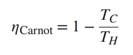
그래서 1-300/475 해도 된다. 36.84%가 나온다. 근데
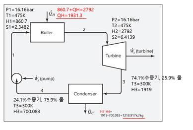
이 그림에서 투입한 열 대비 얻은 일로 효율을 직접 계산해도 된다. 이 경우 계산식은 다음과 같다.
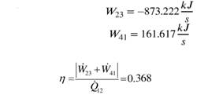
어차피 똑같은 결과값이 나오는 걸 볼 수 있다.